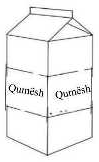
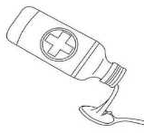
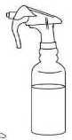
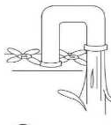
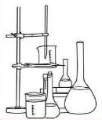
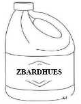
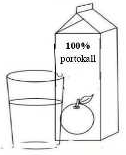
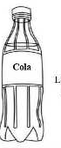

TEMATIKA 4: NJOHJA E RREZIQEVE2. Dielli pastron shtëpinë
Puno në klasë
Ndihmë: si të punoj?
Zgjidh një kartë, pastaj zgjidh kutinë ku duhet të shkojë. Për ta nxjerrë kartën nga kutia, zgjidhe përsëri. Kur të mbarosh, shtyp butonin “Dërgo”.
1.
Vendos lëngjet e rrezikshme në kutinë “Lëngje të rrezikshme” dhe të tjerat në kutinë “Lëngje jo të rrezikshme”.
Lëng i rrezikshëm apo i sigurt?

Qumësht në kuti
Ilaç i derdhur në lugë
Sprej për pastrim
Ujë nga rubineti
Lëngje në enë laboratori
Zbardhues
Lëng portokalli
Lëng i kaltër në shishe Cola